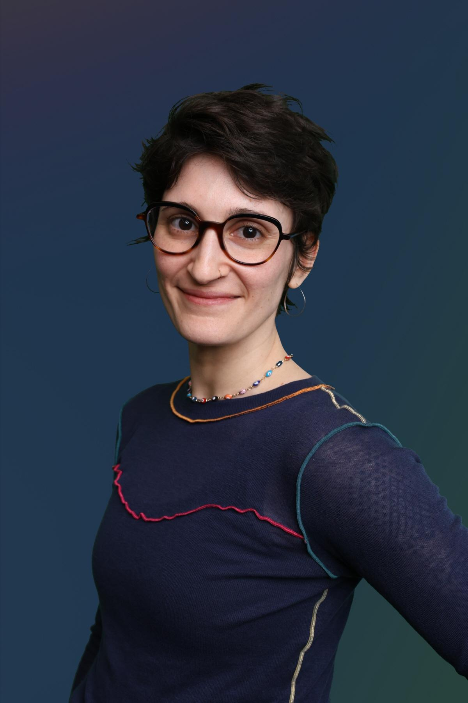
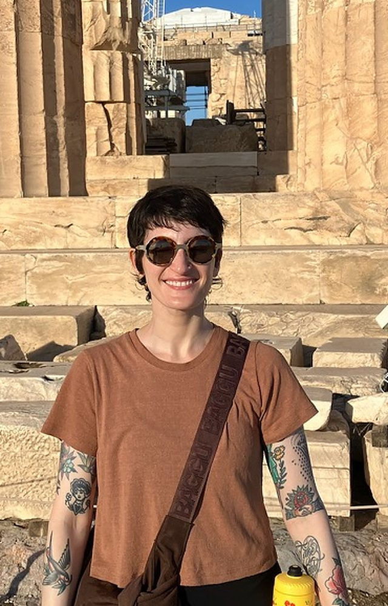

At Meta, Bess set the content strategy for how 3B+ people introduce themselves on Facebook, led content for a privacy change affecting 100M+ users, and built an AI agent that audits product code for content issues. Today she designs content for TikTok’s advertiser tools.
Before tech, Bess spent a decade teaching and researching rhetoric, ancient Greek and Latin, and translation studies. She still brings that training to her research and mentoring.
Off the clock, find her in ballet class, hiking Bay Area trails, or knitting under the watchful eye of her sassy tabby, Ezra.